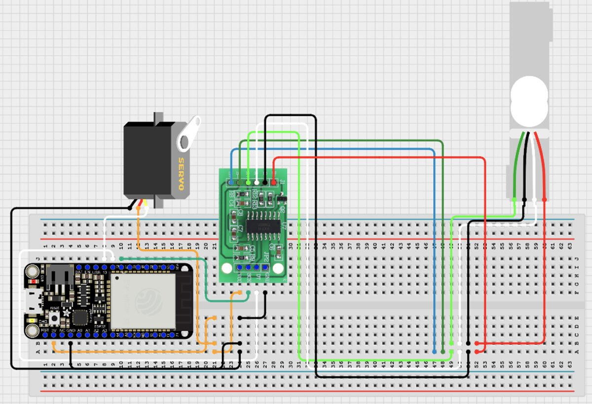
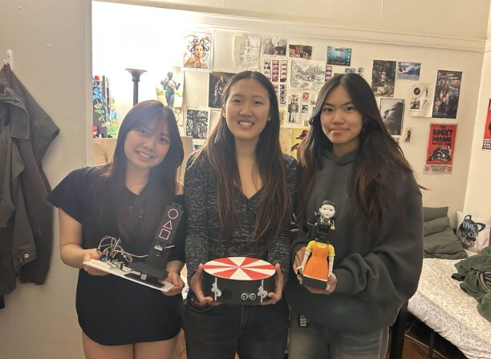

Overview

CATDOTCOM is an automated three-in-one cat toy designed to keep indoor cats active through a sequence of ESP32-controlled components. The system begins with a proximity sensor that triggers audio playback and wirelessly activates a laser module using ESP-NOW. The laser module uses a time-of-flight sensor to detect when the cat catches the laser, then moves it to a new position using two servos. After several successful interactions, a feeder module checks for an existing treat using a load cell and dispenses one if none is detected. All components are monitored and controlled via a live web interface that provides real-time status updates and remote control.
Component 1 — Control
The control module serves as the central hub of the system, managing communication between all three components and the user interface. It is responsible for initiating the toy's play sequence and coordinating actions across the laser and feeder modules.
This module begins by continuously monitoring the environment using an ultrasonic distance sensor. When the cat is detected within a range of 10 cm, the control module activates the play session by playing a song from Mingle, a game featured in Squid Game Season 2. Simultaneously, it transmits a wireless signal via ESP-NOW to the laser module to begin its interaction cycle.
In addition to local control, this module integrates the system's Internet of Things (IoT) functionality. It sends real-time data to a web interface, allowing users to monitor the toy remotely. The website provides live updates every second, displaying the cat's distance from the sensor, whether the audio is playing, and includes a manual control button to toggle the system on or off.
After the laser module completes its interaction cycle, it sends a signal back to the control module. The control module then forwards a command to the feeder module to dispense a treat, concluding the sequence.

Component 2 — Laser Module
The laser module functions as the second stage in the interactive toy sequence and is responsible for providing active engagement with the cat. It is wirelessly triggered by a signal from the control ESP32, upon which the laser diode is activated to begin play.
This module uses a time-of-flight sensor that is aligned with the laser beam to detect interruptions in its path. When the sensor identifies that the beam has been blocked, it infers that the cat has successfully “caught” the laser. Upon each successful detection, the module commands a pair of servo motors to reposition the laser diode, creating a new target location for the cat to chase. The two servos provide rotation about two axes, allowing for extensive range of motion of the laser point.
After a predefined number of successful interactions, the module turns off both the laser diode and the time of flight sensor. It then sends a signal back to the control ESP32 to initiate the final feeder module.
Component 3 — Feeder Module
The third and final component of this system is the feeder module, which is responsible for dispensing a treat at the conclusion of the toy's interactive sequence. Upon receiving a signal from the control ESP32, the feeder activates and begins by measuring the current weight on the platform using a bending beam load cell paired with an HX711 amplifier. This measurement is used to determine whether a treat is already present.
If the sensor detects a nonzero weight, the system assumes a treat is already available and ends the sequence to prevent overfeeding. If the weight is zero, indicating no treat is present, the module triggers a servo motor to dispense a single treat. After dispensing, the feeder ends the cat's play session, completing the toy's operational cycle.
Team
